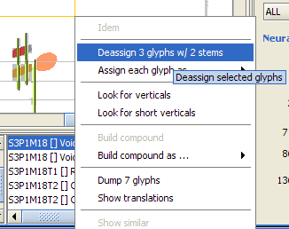
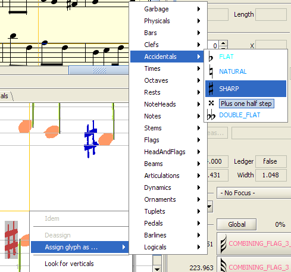
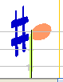

Audiveris Quick Example
Author: Hervé
Bitteur
Updated:
Purpose of this document is to describe a very simple yet
realistic use of Audiveris, so that you can get acquainted with some
of its major features.
Nota: Your own experience on the same music sheet may vary
because some parameters may have evolved, for example you may be
using a different Neural Network and therefore the glyph recognition
may produce different results.
Initial actions
Launch Audiveris
- First, navigate to the directory where you have extracted the
Audiveris distribution archive.
- Then the easiest way is to double-click on the jar file
named audiveris-3.1.jar located in
the dist subfolder.
- You can also use the following command:
$> java -jar dist/audiveris-3.1.jar
or if for example you need more memory:
$> java -Xms128m -Xmx256m -jar
dist/audiveris-3.1.jar
Load an image
From the File menu, select the Open Sheet
item and in the dialog box which appears, select
the chula.png file located in the /examples
folder.
This loads the image out of the selected file, and the application
window now looks like the following. Note that the image width
(2450 pixels) and height (1954 pixels) are listed in the
log panel.

Let Audiveris work
From the Step menu, directly select
the SCORE step, as indicated below
(the LOAD step has already been done as indicated by
the check mark, we want to go through all steps, down to
the SCORE step):

Audiveris will execute all the steps until the selected one. The
user interface will evolve in parallel to the final view as in
following picture.
Notice that:
- The staff lines have been erased and replaced by straight
lines
- The barlines and the braces are displayed in light gray
- The stems are in green with a straight vertical segment
line
- The other symbols are displayed in specific colors, which is a
visual help to detect no recognition (red color) or wrong
recognition (the color is not the one expected).
You can have a look at the other tabs:
- Picture: the original image
- Lines: focus on staff lines
- Horizontals: focus on horizontal segments, such as ledgers
- Bars: the barlines
- Verticals: the stems
- Glyphs: the result of glyph extraction
The upper part of the window displays a synthetic view of the
resulting score, on an ivory background, as translated from the
extracted glyphs. If you can't see this view, make sure it is not
collapsed, by dragging down the split line located just above the
tabs.

Manual Corrections
Nota: Your actual results may vary
according to the environment, notably the value of the various
application parameters (which can be viewed and modified in the
Options window) or even the training of the neural network.
Segmented Sharp Sign
We can first use the "Error pane", which is located in the middle at
the bottom of the screen.
- It displays the set of errors found, sorted by their location
within the score:

- The location of the first message is here coded as
"S2P1M18" (System 2, Part 1, Measure 18) for the first
error. The message "Voice #1
too long for Q" indicates that in the specified measure,
the voice #1 is too long, it ends exactly one quarter (Q) after
the normal duration of the measure. The following message says
the same thing for voice #2 in the same measure.
- For any error listed in this error pane, simply clicking on a
message will move the current focus to where the program thinks
the error is located. Here it will point to the center of
specified measure, with the focus point being indicated by
crossing bars (of brown color by default). The score display and
the sheet display are kept in sync.

- We can notice that a sharp sign has not been recognized, and has
been further segmented into spurious stems and small leaves,
some of them being assigned a note head shape as visible in the
score display. And these false void note heads, with their
duration, are responsible for the wrong measure duration.
- To fix this, the easiest way is to select the sharp glyph as a
whole. To define a "lasso" , simply keep the Shift key pressed
while clicking and dragging the left mouse button, as in this
picture:

- Then a right click opens a popup menu related to the object(s)
at hand. Select the "Deassign 3 glyphs w/ 2 stems" menu
item

- And you now get a deassigned glyph, colored in red, since the
program has not been able to assign a shape to it. You may think
that the glyph is obviously a sharp sign, but there is a stem
very close to it and generally a sharp is not that close to a
stem, like a black note head would be. So the Neural Network
decided this was not a sharp.

- You are now left with manually forcing the shape. Simply select
the glyph with a right click, and use the menu item
"Assign glyph as ...", then "Accidentals", then
"SHARP". Granted, this is not a very convenient
interface...

- And the final result is:

Stems
The errors pane is now empty. This does not mean there is no error
left, but rather than the program has not detected any other
error!
- Browsing through the sheet view, you can notice the strange
looking glyph:
 Fixed As:
Fixed As: 
- The glyph has been mistaken for a grace note, due the fact that
the stem had been cut by the staff line removal.
- To correct this, we select the glyph, and in the popup menu got
through a right click, we select the item "Look for
verticals"

- It immediately segments this glyph into one stem, one beam hook
and one black hote head.
Deassign glyph
- Browsing till the end of the score, you may notice the flag
shape of one of the last notes, in measure 19:
 Fixed
As:
Fixed
As: 
- This time, we have the merge of two glyphs (a flag and a quarter
rest) resulting into something that we cannot split. [For the
time being, only stems and slurs can be handled this way by
Audiveris].
- The simplest action is to deassign the glyph, by selecting it,
and clicking the "Deassign" button in the Glyph
board.
Script
Script writing
|
You can decide to store the script of your actions
related to 'chula' sheet, by selecting
the Store script item in
the File menu.
Select the location, and your script is written by
default as chula.script file.
If you close the current sheet without saving your
script first you will be asked for saving the
related script of your actions:

|
Here is the content of chula.script:
|
Script replay
You can replay any script, by simply selecting the Open
script item in the File menu, and choosing a
script file.
For example, just choose the script you've just stored, and watch
'chula' image be reloaded, the various steps performed, and the
series of your manual actions done again. From that point on, you
can make additional actions through the user interface, these
actions will be added at the end of the sheet script. It's a
convenient way to work again on a previous session for example. If
you are curious, have a look at the 'chula.script' file, which is a
simple xml file where all your actions are easily recognized.
Output
Score Parameters
In order to write down the score using MusicXML format, or to play or
write Midi information, the score needs some global information to be
assigned beforehand. The user is prompted for these parameters
through the following dialog window:

- First
some global data, to specify the tempo in quarters per minute, then
the velocity (volume) in the range 0..127
- Then, part by
part, you can assign part parameters: the part Id, a part name and a
Midi instrument
Note that there are generally acceptable
values for all the fields.
This dialog is shown only the first
time the score is used for some output, unless the constant
"promptParameters" in unit "score/ui/ScoreActions" is
set to false. It can always be explicitly opened from
the Score menu by selecting the Set
parameters menu item.
Score writing
|
If we are rather satisfied with the final
translation, we can write the result into a MusicXML
file.
In the Score menu, we select
the Store in Xml item which presents a
dialog box to choose a target file.
We finally click on the Record button,
et voila!
|
Here is the content of chula.xml:
document.write("");
|
Midi Playback
There is now a simple MusicXML/Midi interface, a Java open source
program named XenoPlay (see the XenoPlay website),
embedded within Audiveris. It allows a simple playback of the score
through the platform Midi engine, as well as the writing of Midi
files.
All Midi features are available in the Score menu, and some of them
are directly callable from the tool bar:

There are two icons, the
left one for starting/pausing/restarting the playback, and the right
one for stopping the playback.
During the playback, the Score
display is kept in sync, using a (violet) vertical bar on the
current time slot:

For
the time being, you can only play the whole score (though you can
pause/restart or stop at any time). You cannot play just a selected
measure for example.
Other limitations are due to the embedded
MusicXML/Midi software which is more like a demo and does not yet
handle repeat signs or similar coda information.
Writing Midi
Writing MIDI information into a Midi file is available through the
Score menu, using the "Store in Midi" menu item. You are
prompted for selecting an output file, and the Midi information is
written using Midi format 1.
External
Connecting Finale
We can simply connect another tool, thanks to the emerging MusicXML
standard. For example you can download a free demo version of Finale
2007, which for among other features correctly handles the repeat
signs, and more.
Within Finale application, in the File menu, use
its Music XML | Import item, and get a
display of our score. Then, press Play button, and
listen!